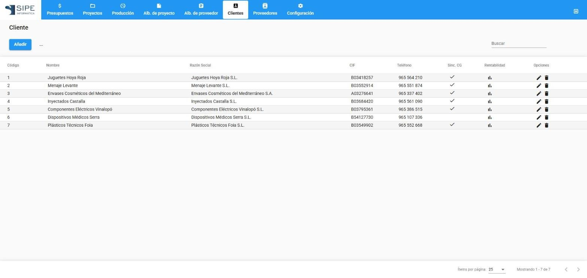

Clientes y proveedores

Clientes
| Elemento | Descripción |
|---|---|
| Código | Código del cliente; forma parte de las referencias de presupuestos, proyectos y albaranes. |
| Sinc. CG | El cliente está sincronizado con Classic Ges. |
| Rentabilidad | Abre el informe de rentabilidad: elige el periodo y pulsa Generar informe. |
| Ficha | Código, datos fiscales y de contacto, forma de pago y datos del importador. «Mostrar campos ocultos» muestra el resto de campos. |
| Sincronizar con… | Trae o actualiza los clientes desde Classic Ges. |
Proveedores
Funcionan igual: código, datos fiscales y de contacto, y sincronización con Classic Ges. Se usan en los albaranes de proveedor, en las entregas a subcontratistas y en la lista de materiales del proyecto.